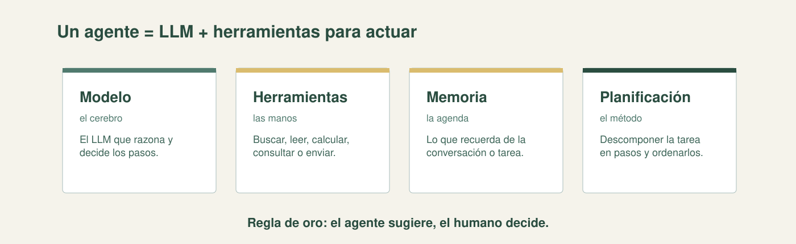

Referencia · Bloque 6 — Inteligencia Artificial
Hoja de referencia rápida: qué es un agente, sus cuatro componentes, sus usos, sus riesgos y las salvaguardas que exige.
Un agente de IA combina un LLM con herramientas para realizar tareas. No solo responde: decide pasos y ejecuta acciones con cierta autonomía. Es como encargarle una tarea en lugar de preguntarle algo.

| Componente | Qué es | Analogía |
|---|---|---|
| Modelo | El LLM que razona y decide los pasos. | El cerebro |
| Herramientas | Lo que puede usar para actuar: buscar, leer, calcular, consultar, enviar. Cada una trae su descripción. | Las manos |
| Memoria | Lo que recuerda de la conversación o de los pasos ya hechos. | La agenda |
| Planificación | Descomponer la tarea en pasos y ordenarlos; puede seguir un flujo definido o decidir por su cuenta. | El método |
| Uso | Qué hace | Ejemplo |
|---|---|---|
| Asistente | Conversa y resuelve dentro de un dominio, con los documentos de la institución. | Consultas sobre requisitos de trámites. |
| RAG | Busca en las fuentes propias y responde citando lo encontrado. | Agente que cita el reglamento interno de la alcaldía. |
| Automatización | Ejecuta pasos repetitivos. | Clasificar correos o llenar planillas. |
| Riesgo | Qué puede pasar | Salvaguarda |
|---|---|---|
| Error de datos | Busca mal, cita una fuente incorrecta o extrae un dato erróneo. | Verificar contra la fuente; RAG con documentos confiables. |
| Acción indebida | Envía, publica o modifica algo que no debía. | Menor privilegio: leer, pero no enviar; sugerir, pero no publicar. |
| Falta de transparencia | No queda claro por qué tomó una decisión. | Auditoría y trazabilidad: registrar qué hizo y con qué fuentes. |
Por qué importa: un agente actúa, así que un error no es solo una frase: puede ser una acción. En el sector público la responsabilidad es del funcionario, no de la herramienta: el agente sugiere, el humano decide.
Agente → LLM + herramientas que actúan. · Componentes → modelo, herramientas, memoria, planificación. · RAG → buscar y citar fuentes. · Supervisión → humano en el circuito, menor privilegio y trazabilidad. · Confidencialidad → no subir datos de ciudadanos ni documentos reservados.
Fuentes: Microsoft Learn (Fundamentos de IA generativa y agentes); Russell y Norvig, Inteligencia artificial: un enfoque moderno.